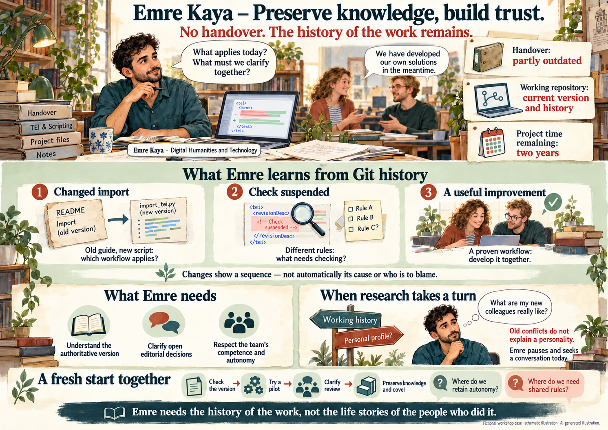

Transfer
A then version
Carefully started, developed under difficult conditions and now partly overtaken.
01 Emre Kaya · a new colleague with editorial and technical expertise
Emre knows the subject of the edition. He can test TEI, develop transformations and work with Git. The project needs precisely this combination of expertise and technology. There is no direct handover.
"What's going on today? What's at risk? Who do I have to talk to?"

His predecessor was unexpectedly on sick leave for a long time and has since left. The documentation she began is helpful, but does not cover later changes. Recruitment, the short remaining contract and administrative procedures delayed the appointment. There are now two years project duration.
Emre wants to help quickly. What he needs to decide and coordinate in the future, he has to agree with management and team first. He is not automatically their supervisor.
A fictional case story. Persons, projects and sample data are designed for this case. The findings presented apply within the narrative. This offline unit does not access any repositories.
Transfer
Carefully started, developed under difficult conditions and now partly overtaken.
Working repository
What is decisive and how the parts are related, Emre must first examine.
Milestone Plan
The actual delay has not yet been accounted for.
A good resetting does not automatically close a commit gap. Git can partially replace a missing conversation.
Support and autonomy
On the first tour, the colleagues show him their processes. "The import is running with us." "The corrections are checked by two." "We decide on the approval depending on the case." During the vacancy they took responsibility. A new test sequence works well; other solutions have remained provisional.
Emre asks for a demonstration of real work packages. He sees successes, but also diverging stands and delayed tests. Not everything began with the failure: already previously missing representation and jointly documented decisions.
The team is looking forward to receiving support. At the same time, one colleague asks: "Do we need to have every step approved again?" Emre wants to be part of it. He does not want to turn back any successful innovations or simply assume joint commitment.
Emre needs guidance in order to act responsibly. The team wants to retain its achieved independence. The project needs reliable quality and clear deadlines. None of these perspectives do the others.
Support is needed; re-control is not automatically desired.
Three technically useful historical findings
Emre compares the documented version before the Vacancy with later workstations and today's files. In the README is still the old import script. In two subsets there are now different tests. A colleague has also built up an improved release sequence, which so far only uses her area.
He reads Diffs and checks suitable TEI examples with the current and present rules. After an import several files were repeatedly corrected. Was this a technical revision, a technical repair or just a format change? The order is visible in the Git. Causes he clarifies with the parties before he replaces procedures.
The README is called import-v1.py. The current pipeline uses import-v2.py with modified TEI mapping.
The reference test is disabled in a subset. A reason or end date is not documented.
One area works with independent correction check. This improvement has not yet been taken on together.
The three finds show versioned configurations, scripts and documentation. An additional platform review is checked in the third find; it comes from a provided platform export and is not part of any Git repository. Unsaved conversations remain unknown. Commits and line changes are not working hours or debt points.
Git shows documented state changes. Context and people are needed for their professional interpretation.
A First Change of Knowledge Interest
A release rule was first introduced, removed again and later only partially adopted. An old commit message says: "That's not the way it was agreed upon." Another reads: "Please don't take over without testing again." Names are visible, the conversation context at that time is missing.
Emre now better understands why today's rule is incomplete, but he could also start counting who took back changes and who allegedly crossed the line. That would change his question.
Instead, he notes: Which substantive decision is still effective? What examination is lacking today? Who is now responsible for this? An earlier assignment may be necessary to clarify a decision. No judgment on the general performance of the participants follows from this.
One track / two readings
Freigaberegel eingeführt → zurückgenommen → teilweise übernommen
"Why is a binding test missing today?" asks about the continuing procedure. "Who was the braker then?" Turns individual actions into a personal judgment. An irritated comment proves his formulation, not character, motivation or today's trustworthiness. git blame shows the last visible change of a line, not personal guilt.
State reconstruction is not automatically personal blame assignment.
Human Temptation
Two colleagues, who meet Emre in a friendly manner today, have sharply contradicted each other in the old release discussion. A colleague who is now reluctant at that time seemed decisive. He almost involuntarily asks himself: Who understands with whom here? What should I know in order not to get between the fronts?
It would be easy to search further discussions for accounts. Emre realizes how his professional research could become a social orientation. He is new and wants to feel safe. But a collection of old conflicts would introduce him to the others before they themselves have the opportunity.
He interrupts this search. He wants to understand still more effective factual decisions. He would like to get to know the colleagues in today's joint work. Even the private reasons of the earlier failure remain unknown; breaks or comments do not provide any viable explanations for this.
The decision threshold
A legitimate extension goes from today's working method to previous discussions in order to understand a further-working substantive decision. The envelope begins here with the systematic bundling of old conflicts after persons without concrete technical necessity – for example, to derive loyalty, character or private backgrounds.
Emre needs the history of work, not the life story of those who did it. This does not prohibit any investigation of organizational responsibility.
Reviewing findings together
Emre presents a process card: Update import documentation, synchronize test procedures, decide open approval. In addition, the new correction check is a successful example. He has not created a list of personal errors.
"Good that we finally get an overview again," says someone. A colleague asks: "Does this mean that you are constantly controlling our changes in the future?" Emre explains what specific question he has derived from which files. He wants to clarify his role and future decision-making rights together.
The conversation is not immediately harmonious. The desire to let go of previous conflicts is understandable. Nevertheless, real quality problems have to be dealt with. Emre proposes that the procedure should be started and that necessary technical responsibility should be assigned without setting the team on old disputes.
Significant import, complete testing, open approval, residual work and today's responsibility. Good local solutions should be obtained and tested together.
Private declarations, character judgments or a complete re-rolling of personal conflicts. Trust should arise in joint work.
Structural omissions before the failure must also be identified: lack of representation and concentrated knowledge can be changed organizationally. The case does not imply a serious breach of duty. Such a specific question, if any, would have to be dealt with separately via the relevant ways.
A fair retrospective is neither a tribunal nor the suppression of real problems.
A limited pilot instead of a major reorganization
Emre and the team choose a small subset. Together they follow him from editing to technical review to approval. Where do the exams take place? Which decisions can remain independent? When does someone else have to look?
The experiment does not become a new monitoring tool. It is intended to show what is necessary for reliable handovers. The management clarifies roles and decision-making room with the team. Procedures are documented together; for central tasks a representation is agreed.
The delay is not yet quantified, the project completion has not yet been secured. But the next weeks will have a robust direction: check today's risks, test a process and keep the knowledge gained accessible.
Git preserves technical traces. Durable cooperation arises from common professional understanding.
Workshop notes
Table discussion material
Emre, the team and the common new beginning between knowledge transfer and personal curiosity.
Illustrated PNG overview page available in landscape format · offline.

Repository: versioned inventory of files. A working repositorysitory contains editing states; a publication repositorysitory offers released results. A collection can connect both functions.
Git History: received file versions and documented changes. It contains traces of the work, not a complete record of the work process. A commit documents a change; a diff shows differences between states.
Test, editorial review and approval: A test examines a finding. A editorial review is a editorial review. A Z XQ2 is a decision about a ZX Q3. Technical validity alone is not a ZXq4.
According to the two Emre Kaya briefings, version 0.1 of October 27, 2026, in the design framework of Christine, Agent and Dorothée. Emre is a human new employee, not an agent and not an external expert. The repository finds are designed examples, not real project passages.
The group should be able to designate a useful search, a failed personal research and a joint negotiation measure. Different boundaries remain debatable. No personal disclosure is required.
Version 1.1.0 · Local offline unit. PNG and illustration are embedded. No external runtime services.
Record a decision, the responsible role and your next check.
Prepare an action →